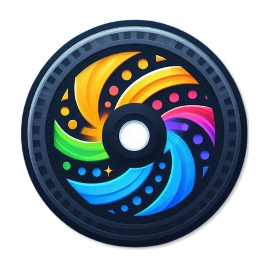

<ion-header [translucent]="true">
  <ion-toolbar>
    <ion-buttons slot="end">
      <ion-menu-button></ion-menu-button>
    </ion-buttons>
    <ion-title> Mi lista</ion-title>

    <ion-avatar aria-hidden="true" slot="start">
      
    </ion-avatar>
  </ion-toolbar>
  <ion-toolbar>
    <ion-searchbar
      placeholder="Buscar"
      [debounce]="1000"
      (ionInput)="buscar($event)"
    ></ion-searchbar>
  </ion-toolbar>
</ion-header>

<ion-content [fullscreen]="true">
  <ion-header collapse="condense">
    <ion-toolbar>
      <ion-title size="large">Mi Lista</ion-title>
    </ion-toolbar>
  </ion-header>

  <ion-card>
    <ion-card-header>
      <ion-card-title>Mis Peliculas</ion-card-title>
      <ion-card-subtitle
        >{{peliculasFiltradas.length}} peliculas encontradas</ion-card-subtitle
      >
    </ion-card-header>

    <ion-progress-bar *ngIf="cargando" type="indeterminate"></ion-progress-bar>

    <ion-card-content>
      <ion-list lines="full" class="peliculas">
        <ion-item-sliding *ngFor="let peli of peliculasFiltradas;index as i">
          
          <ion-item>
            <ion-item 
            
              lines="none"
              [routerLink]="['/ficha/',peli.imdbID]"
              routerLinkActive="router-link-active"
            >
              <ion-thumbnail slot="start">
                
              </ion-thumbnail>
              <ion-thumbnail class="datos">
                <ion-label>{{peli.Title}}</ion-label>
              </ion-thumbnail>
               
            </ion-item>
            <ion-item slot="end" lines="none">
              <ion-icon
                (click)="setFav(peli)"
                *ngIf="peli.fav!==true"
                class="corazon"
                name="heart-outline"
              ></ion-icon>
              <ion-icon
                (click)="setFav(peli)"
                *ngIf="peli.fav===true"
                class="corazon"
                name="heart-sharp"
                color="danger"
              ></ion-icon>
            </ion-item>
          </ion-item>

          <ion-item-options side="end">
            <ion-item-option (click)="pulsarBorrar(peli)" color="danger"
              >Borrar</ion-item-option
            >
          </ion-item-options>
        </ion-item-sliding>
      </ion-list>
    </ion-card-content>
  </ion-card>
</ion-content>
<ion-footer>
  <ion-segment (ionChange)="cambioSegmento($event)" color="primary" value="all">
    <ion-segment-button value="all">
      <ion-label>Vistas</ion-label>
    </ion-segment-button>
    <ion-segment-button value="favorites">
      <ion-label>Favoritas</ion-label>
    </ion-segment-button>
  </ion-segment>
</ion-footer>
